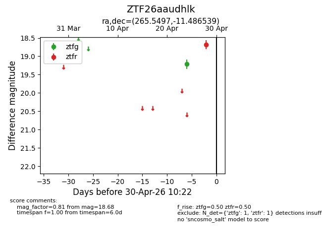
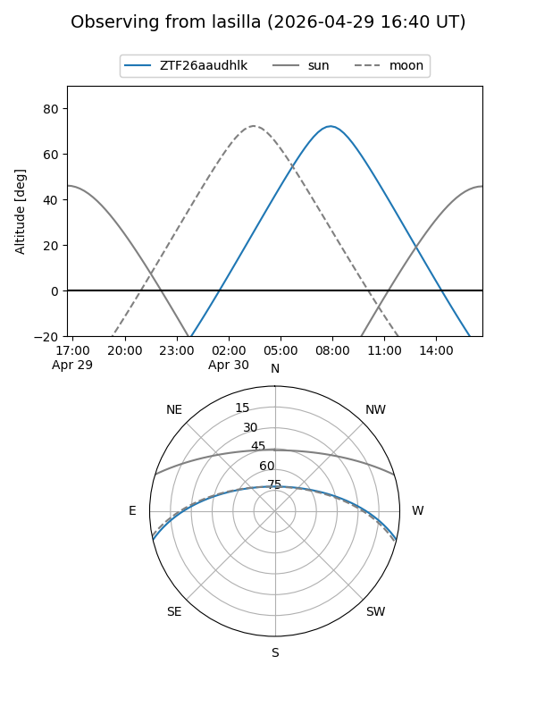
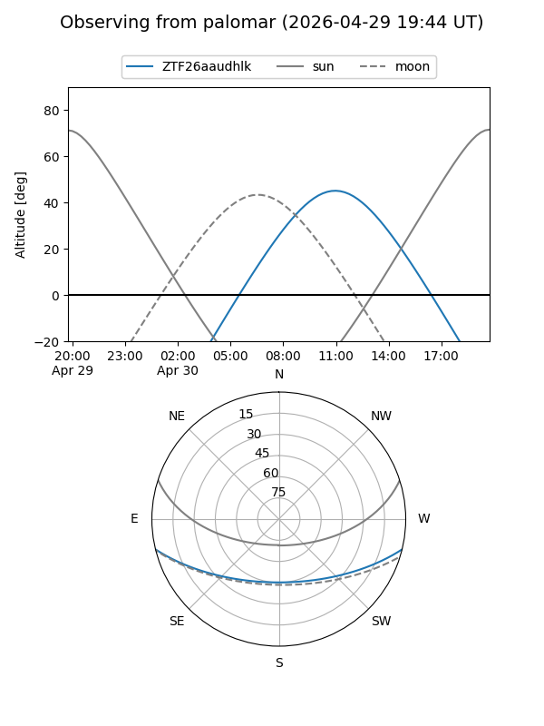

ZTF26aaudhlk
Target ZTF26aaudhlk at 2026-04-30 10:27
Aliases and brokers:
FINK: link
Lasair: link
ALeRCE: link
alt names
ZTF26aaudhlk (ztf,fink_ztf)
Coordinates:
equatorial (ra, dec) = 265.5497,-11.48654
equatorial (HMS+DMS) = 17:42:11.94,-11:29:11.54
galactic (l, b) = (14.5895,+9.71209)
Flags:
Photometry:
last ztfg=19.21, ztfr=18.68
1 ztfg, 1 ztfr detections
Lightcurve

Visibility


Additional plots